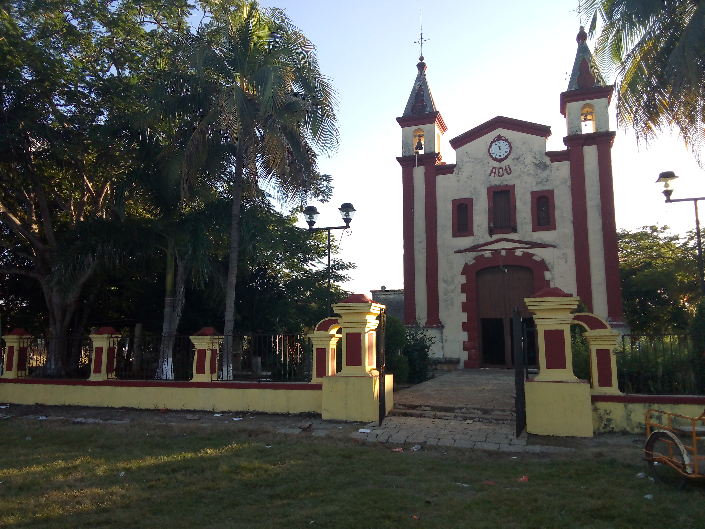

IGLESIA SATA MARIA ACU
La Iglesia Católica de Santa María Acú, en mi comunidad de Halachó, Yucatán, es un lugar muy especial para mí. Su estructura antigua y su ambiente tranquilo me conectan con nuestras tradiciones y con la fe que muchos compartimos. Cada vez que entro, siento una paz profunda y un fuerte sentido de pertenencia a nuestra historia y cultura. .
.jpg)
CENOTE
El Cenote de Santa María Acú, ubicado en Halachó, Yucatán, es un cuerpo de agua natural de gran belleza, caracterizado por sus aguas cristalinas y rodeado de naturaleza. Es un cenote semiabierto que ofrece un entorno tranquilo, ideal para nadar y disfrutar del paisaje típico de la región. .
.jpg)
CASA PRINCIPAL
La casa principal de Santa María Acú es un sitio que siempre me ha impresionado. Es una construcción antigua, grande y con mucha historia; sus paredes guardan recuerdos de generaciones pasadas. Cada vez que la visito, me transporta al pasado y me hace sentir orgulloso de mis raíces y de la riqueza cultural de mi comunidad. .
.jpg)
TILAPIA
La tilapia de Santa María Acú es una de las cosas que más disfruto en mi comunidad. Criamos estos peces en aguas limpias y frescas, y su sabor es delicioso, sobre todo cuando se prepara al estilo tradicional. Es una fuente importante de alimento y también de trabajo para muchas familias de la zona. .